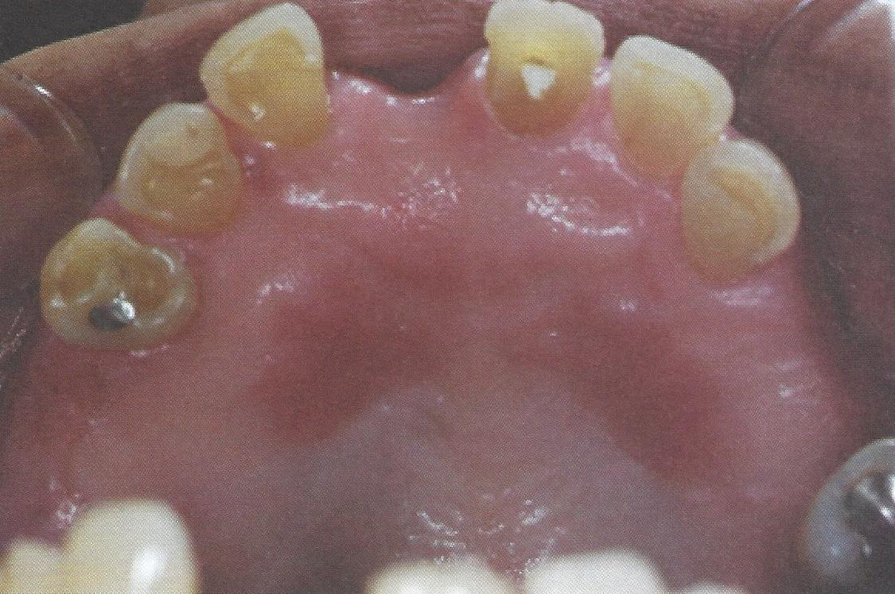

รอยโรคปากอักเสบเหตุฟันเทียม

Denture stomatitis
สาเหตุจากฟันเทียมสภาพไม่ดี และพฤติกรรมการใส่ฟันเทียมไม่เหมาะสม เช่น ใส่ฟันเทียมขณะนอน หรือไม่ทำความสะอาดฟันเทียม ทำให้มีการติดเชื้อราใต้ฐานฟันเทียม
ลักษณะทางคลินิก พบรอยแดงเป็นหย่อม ๆ บริเวณเนื้อเยื่อใต้ฐานฟันเทียม มีผิวขรุขระคล้ายเป็นตุ่มยื่นเล็ก ๆ